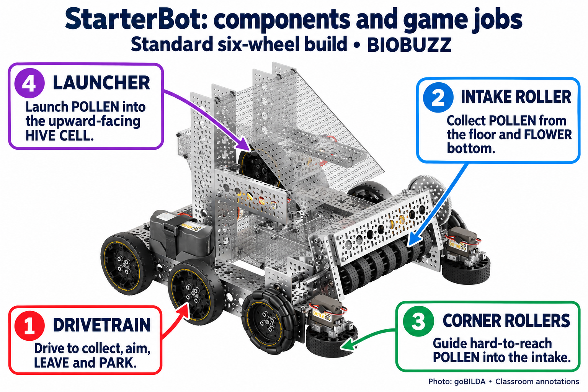
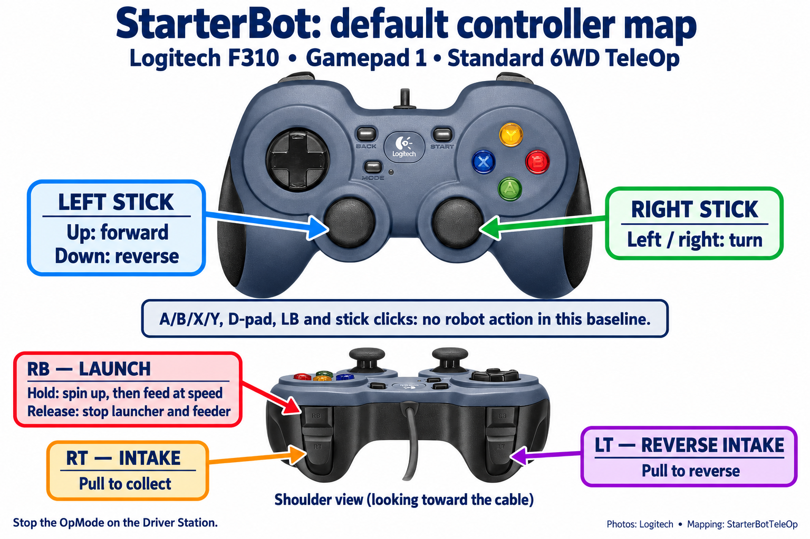

Today’s goal
How we will work today
This is a whole-team discussion. Use the StarterBot pictures, vendor instructions, sample code, field diagrams, and worksheets together. Keep one shared action inventory and one control map; choose a recorder and rotate that role during the discussion.
- Review the standard StarterBot design and trace the pollen path.
- Review its code and point out the default controller inputs.
- Discuss the included IMU, motor encoders, and webcam option.
- Review the field, scoring objectives, rules, and measurements.
- Choose our robot actions and upgrades, then complete the worksheets together.
Build status: the standard BIOBUZZ kit is ordered. Today’s decisions use the documented design; assembly and physical calibration follow delivery.
Today’s plan
- Review the build. Use the labeled StarterBot picture to name its mechanisms and trace the pollen path.
- Review the code and controls. Compare the starting programs and follow the controller map. Discuss simultaneous requests and release behavior.
- Review sensing. Discuss encoders, the Control Hub IMU, and a webcam: what each measures and what needs calibration.
- Review the game. Walk through the field and scoring objectives, then the dimensions that affect our design.
- Break.
- Make team decisions. Choose what we want the robot to do, complete the action inventory, and fill in the control map. Use the intake example if a question needs explanation.
- Talk through the plan. Use the team discussion prompts and review questions to check controls, conflicts, and open decisions.
- Save decisions and next tasks. Keep the completed worksheets and assign the first build and calibration tasks.
The discussion blocks total 180 minutes. Record unanswered questions and their next check; actual robot measurements and powered tests happen after assembly.
What does the StarterBot design provide?
Our planned build: The ordered kit will become the standard six-wheel, skid-steer 2026–2027 goBILDA StarterBot. The documented design has an intake, corner rollers, a four-pollen path, feeder, and launcher. It does not strafe. The mecanum version requires extra parts and different drive code. The kit still needs the REV control system. See the exact vendor build guide.

- Drivetrain: moves between collection and shooting positions, turns the robot to aim, and supports LEAVE and PARK.
- Intake roller: collects POLLEN from the floor and the bottom of a FLOWER.
- Corner rollers: guide hard-to-reach POLLEN toward the intake, supporting faster collection cycles.
- Launcher: sends POLLEN into the upward-facing HIVE CELL. Feeding, speed, alignment, and shot distance must work together.
Discuss: Trace the path of one POLLEN from collection to launch. Which parts help us score directly, and which support the cycle? Which parts move the ball, and which parts move the whole robot? Keep questions about upgrades for the decisions later in the meeting.
What can the starting code already do?
Starting code: the reviewed vendor ZIP contains both TeleOp and autonomous Java, plus TeleOp Blocks. The vendor auto launches first, then drives; it has no vision. Our repository includes the vendor source, a team baseline, a held aim-assist draft, and a complete selectable approach–position–shoot–park draft with reusable drive and launcher classes. See code map, operating limits, and calibration.
| Program | What it does | Question for the team |
|---|---|---|
| goBILDA TeleOp / our baseline | Driver-controlled movement, intake and reverse, launcher speed control, and feeding when the launcher is fast enough. | Which actions can we perform together? What happens when we release each input? |
| goBILDA autonomous | Runs a timed launch sequence, then a short encoder-based drive. It does not use AprilTags. | How does this compare with our desired shooting and parking route? |
| Team assisted TeleOp and autonomous drafts | Adds selected-cell aiming, IMU heading control, bounded tag positioning, and measured approach/shoot/park routes. | Which additions are useful enough to build, calibrate, and test first? |
Use the baseline mapping in the next section to follow an input from the controller to a robot action. The team drafts supply additional logic; their robot settings and routes still need calibration after assembly.
Read the default controller map
This is the standard StarterBot TeleOp mapping on gamepad 1, as used by TeleOpBasic. Use it as a starting point for the control-design discussion; our team can choose a different map after rehearsing the workload.

| Input | Robot action | Release / interaction |
|---|---|---|
| Left stick up / down | Forward / reverse | Center removes the forward/reverse request; the right stick can still turn the robot. |
| Right stick left / right | Turn left / right | Center removes the turn request; the left stick can still drive. Both centered: drive output zero. |
| RT / LT | Collect / reverse the intake roller and corner rollers | Intake request is RT minus LT. Equal pressures cancel when not feeding; releasing both removes the trigger request. |
| Hold RB | Request launcher speed; feed automatically once measured speed exceeds the minimum | Feeding also adds 0.5 to the intake request. Release RB to stop launcher/feeder commands and return intake control to the triggers; the flywheel takes time to spin down. |
| A/B/X/Y, D-pad, LB, stick clicks | No robot action assigned in this baseline | Stop the OpMode using the Driver Station. |
Aim-assist draft: during INIT, D-pad left/right selects red/blue and up/down selects the far-side/audience-side cell. Check the selection on the Driver Station before Start. Alliance then locks; to change cells during TeleOp, release A and RB and make a new D-pad up/down press. TeleOpAim also has a different aiming mapping: hold A for stationary aim; RB requests spin-up; A + RB permits feeding only when all calibration, target, alignment, range, and speed checks pass. Use the calibration guide before enabling that draft.
Paper rehearsal: point to the inputs for driving while collecting, reversing a jam, and launching. Predict what happens when RB is held with neither trigger, and when RB is released while RT stays pressed. Which tasks compete for the same fingers?
What can the IMU and webcam tell us?
The mounted REV Control Hub includes an IMU, a sensor that measures which direction the robot faces. Combine that heading with drive-motor encoder counts to estimate movement from a known start. This is odometry: keeping track of position as the robot moves. Wheel slip and heading drift can make that estimate less accurate.
| Source | What it tells us | How we can use it |
|---|---|---|
| Drive-motor encoders | How far each drive motor has rotated. | Estimate travel distance after measuring wheel movement against a tape measure. |
| IMU built into the Control Hub | Heading: which direction the robot faces. | Turn to a requested angle, keep a straight heading, and improve the encoder-based movement estimate. Check the Hub’s mounting orientation first. |
| USB webcam connected to the Control Hub | Which field AprilTag cluster is visible, and its distance and direction relative to the camera. | Approach and aim at the selected hive cell, or check a marked start while the hive is in the same known state. Check camera availability, mount, and calibration. |
A compatible webcam can provide the robot’s “eyes.” Check our available equipment and plan a rigid mount with a clear view of the field tags. BIOBUZZ tags move with the hive cells, so their measurements describe the current target position. See REV’s IMU explanation, FIRST’s webcam guide, and our sensor setup and calibration exercises.
Review the field and game objectives
Source snapshot: FIRST manual TU02, checked September 30, 2026. Points below are from §10.5.5, Table 10-2; scoring conditions matter as much as point values. The vendor describes capabilities, not our tested success rate.
Start with the field picture. Open Figure 9-2: zones and areas and Figure 9-3: loading zone and garden. Trace a possible route from the wall to a shooting position and back to the loading zone. Point out where we would collect, score, and park.
| Game goal and points | What the standard build offers | Gap / decision / evidence to collect |
|---|---|---|
| LEAVE: 3 in AUTO; PARK: 5 in AUTO and 5 in TELEOP (§10.5.4) Figure 10-7: PARK examples Which pictured robots meet the parking condition? How is leaving the wall different? | Drivetrain and vendor encoder auto; LEAVE means no perimeter contact, PARK means at least partly in the LOADING ZONE. | Choose and mark our start/end poses. Measure route repeatability; no fixed distance guarantees points. |
| HIVE TIP: 20 in either period; remaining upward-CELL elements: 2 each at match end (§10.5.1) Figure 10-3: hive damper and frame Find the contact that marks a completed tip. Why should we pause shooting while the hive moves? | Collects floor/flower-bottom POLLEN and launches up to four in succession. | Qualify hits, tip completion, cycle time, jams, and recovery. Aim assistance is an upgrade; ball count alone does not guarantee a tip. |
| FLOWER: 2 per element for owner; bottom NECTAR bonus: 5 (§10.5.2) Figure 10-5: FLOWER ownership Identify the top-most and bottom-most nectar. Which alliance gets each benefit? | Vendor documents bottom POLLEN retrieval, not a top-placement or NECTAR-scoring mechanism. | Decide whether to add a NECTAR-capable top-placement mechanism, defer it, or rely on an alliance partner. Larger NECTAR needs its own handling tests. |
| GARDEN: 1 per qualifying element at match end (§10.5.3) Figure 10-6: GARDEN scoring Point out elements that overlap the garden boundary. Where should our robot release them? | Driving and intake provide a starting way to move POLLEN. | Test controlled release into our GARDEN. Do not assume reversing reliably ejects a held ball. |
| Ranking goals (§10.5.5, Table 10-3) | Driving and repeated successful tips can contribute. | At “all other events,” SWARM needs 16 combined LEAVE/PARK points; POLLINATOR thresholds are 4 and 7 tips. These are alliance totals; regional/championship thresholds remain TBA and premier events may differ. |
Rules that shape the build: maximum four controlled elements (G407); launch into the upward-facing CELL to tip (G417); top entry and bottom POLLEN-only removal at FLOWERS (G418). G410 explicitly restricts NECTAR entry to the last 60 seconds; §10.5.2 describes FLOWER timing more broadly. Check current clarifications before adopting an early-POLLEN strategy.
Which measurements change our design?
| Manual fact | Decision / team measurement |
|---|---|
| 18 × 18 × 18 in starting volume (R102); expanded 18 × 24 × 29 in, physically constrained (R105). Figures 12-1 and 12-2: expansion limits Sketch the camera and mechanisms inside both the starting and expanded envelopes. | Measure complete build with camera and every mechanism position; choose mount and expansion stops. |
| Bottom of HIVE above TILES: 30.6 in, Figure 9-10, §9.6.2 (TU01). Find the clearance reference points; distinguish the bottom of the hive from the cell opening. | Measure actual route clearance, including the frame and attachments, using the reference points shown in the figure. |
| CELL opening about 20 × 14 in; depth 12 in (§9.6.2). Figure 9-11: CELL dimensions Trace a shot into the opening. Which dimensions affect the trajectory and aiming tolerance? | Measure trajectory into the opening, camera-to-launcher offset, and useful shot positions. Centered tag bearing alone does not establish a successful shot. |
| FLOWER top opening about 4 in across, 21.5 in high; bottom retrieval opening about 3.55 in high (§9.7). Figure 9-12: FLOWER details Compare the bottom retrieval opening with the top scoring opening. Which can our planned intake reach? | Compare intake reach with top-placement reach; determine whether a new mechanism is worthwhile. |
| POLLEN about 2.8 in; NECTAR about 3.6 in, with variation (§9.8). Figures 9-13 and 9-14: scoring elements Compare the two sizes with the planned intake and feeder clearances. | Test each element through the intake/path before claiming NECTAR capability. |
| Four 3.25-in tags per CELL cluster (§9.9); clusters move with the hive. Figure 9-16: AprilTags on the CELL Locate the tags relative to the opening. What moves when the hive tips? | Check real print scale, camera calibration/resolution, mounting, bearing sign, and range against a defined reference. Use relative targeting; do not assume fixed-field localization. |
Reading the visuals: Figure links open the official TU02 manual in a new tab at the figure or its section; scroll slightly if needed. Read the labeled dimensions rather than measuring pixels. Manual images are not to scale or AprilTag print targets. Use the current manual and updates to check revisions before the meeting.
Plan the measurements: choose what we need to measure, the reference points and units, and the decision each measurement will help us make. The calibration exercises explain how to place floor marks, read telemetry, calculate ticks per inch, and change one setting at a time. Take actual measurements after assembly.
Decide what we want the robot to do
Now compare the game opportunities with the build, code, controls, and sensors we just reviewed. Complete one shared plan: what is required, what can wait, and what we are choosing not to build for now. Launching remains a required team goal; an unfinished launcher stays on the build plan.
- Baseline first: plan assembly of the standard intake/feeder/launcher; name the owner and the first reliability test after assembly.
- Score reliably: choose a fixed shooting location and measure hits, tips, and cycle time before adding range-dependent velocity.
- Sensing and aim upgrade: use the Control Hub’s included IMU with drive encoders for movement estimates. Check for an available USB webcam, plan its mount, select the correct cell, and decide what happens when heading or tag data becomes unavailable.
- AUTO: choose LEAVE/PARK and a measured route first. Select alliance, cell, a measured start/shot/park route, and mode during INIT. Trace approach → drive to tag → shoot preloads → reverse tag movements → park. Compare a park-only fallback with a shooting attempt; measure time and validate each route before using it in a match.
- Mechanism gap: choose NECTAR/FLOWER work, GARDEN release, or improved intake reliability as the next project. Record value, build time, test, owner, and what must work first.
Use the action inventory below to record the reason for each choice. Then fill out the six-question control map for the actions we choose. Assign build and measurement tasks at the end.
Fill out the game-action inventory
Read each action aloud. As a team, choose Required, Optional, or Unavailable, and write why. Add another row if needed. “Unavailable” means we are not including the action in our current plan; “required — not built” remains a build task.
Use the named manual sections for game constraints and the StarterBot review for planned capability. Keep TELEOP controls and autonomous route choices distinct: AUTO runs without driver input.
| Candidate action | Current manual grounding | Team classification and rationale |
|---|---|---|
| Drive, steer, align, and stop during TELEOP | Sections 10.1, 10.4, 10.5.4; G412-G413 | Required / Optional / Unavailable because __________ |
| Collect allowed POLLEN or NECTAR | Sections 10.1, 10.5.3; G407-G409; G418 for POLLEN removal from a FLOWER | Required / Optional / Unavailable because __________ |
| Retain, transport, and release a scoring element | Sections 10.1 and 10.5; G407-G408 | Required / Optional / Unavailable because __________ |
| Launch a scoring element into the upward-facing HIVE CELL | Section 10.5.1; G417 | Required / Optional / Unavailable because __________ |
| Place allowed POLLEN or NECTAR into the top of a FLOWER | Section 10.5.2; G410 and G418 | Required / Optional / Unavailable because __________ |
| Move or release an allowed scoring element into the team's GARDEN | Sections 10.1 and 10.5.3; G407-G408 | Required / Optional / Unavailable because __________ |
| Return the robot to the LOADING ZONE for TELEOP PARK | Sections 10.1 and 10.5.4 | Required / Optional / Unavailable because __________ |
| Reverse, clear, or recover each selected mechanism | Supporting control for selected action; no scoring claim | Required / Optional / Unavailable because __________ |
| Other legal TELEOP action: __________ | Exact section/rule: __________ | Required / Optional / Unavailable because __________ |
Worked example: collect pollen
This is a paper design example, not our approved control map or a claim that hardware has passed. It follows the collection row in the game-action inventory. Recheck that row’s current rules before approving our version.
| Decision | Example answer |
|---|---|
| Action and reason | Collect allowed pollen from the floor so it can reach our required launcher. Use the collection row’s sections 10.1 and 10.5.3 and rules G407–G409 for the rule check; this example does not approve every possible collection situation. |
| Hardware and readiness | Assume a motor-driven intake is planned but not yet installed. Classification: required. Readiness: not built; output disabled. Builder’s next task: complete the intake using the separate build instructions. |
| Operator and behavior | The mechanism operator requests intake while the driver steers. Choose held input: collect only while the operator holds a button. |
| Proposed assignment | Gamepad 2 right bumper requests collect; left bumper requests reverse. These are example team choices, not vendor defaults or required assignments. |
| Release, recovery, and conflict | Neither button: command zero. Right alone: approved collect command. Left alone: approved reverse command. Both: command zero. Reverse is enabled only after the installed mechanism’s reverse test passes; Stop never depends on reverse working. |
| Feedback and test | Display STOP, COLLECT, or REVERSE and the commanded output. Test neither, right, left, both, release, and Stop on the installed robot. Record which behavior actually occurred. |
| Approval and remaining work | Not approved for powered use. Rehearse workload, build and inspect the intake, determine its safe settings, and complete physical tests before enabling it. This paper exercise supplies no motor power or completed measurement. |
- Point to the proposed buttons while the team talks through neither button, collect, reverse, both buttons, release, and Stop.
- Explain why both buttons select STOP and why releasing the button must write zero.
- Complete the six-question control map together for one actual team action. Change the example choices wherever our robot or workload needs something different.
Finished result: you can trace action → operator → input → decision → output → test, and distinguish a proposed control from a tested mechanism.
Discuss the plan as a team
Keep the field picture, controller picture, and shared worksheets visible. Have the recorder capture a decision or open question for each prompt.
- First useful robot: which required actions should work as soon as the standard build is assembled?
- Next upgrade: choose between improved collection, assisted shooting, autonomous positioning and parking, or another scoring mechanism. What game objective does it help?
- Driver workload: talk through driving while collecting, aiming, shooting, and recovering a jam. Would one or two gamepads make those tasks easier?
- Conflicting requests: point to the controls and say what should happen for collect plus reverse, driving plus held aim, or a released launcher request.
- Measurements: identify which answers need a tape measure, IMU heading, camera reading, or actual shot trials after assembly.
- Next task: give each chosen improvement an owner, prerequisite, and first check. Record a reason for work we defer.
Our control map
Use one copy of the six questions below for each action we want to control. Write button names in everyday language, such as “gamepad 1 right trigger.” We can look up the Java names when we code.
Fill in once for the whole map: team / recorder: __________; date: __________; robot: standard StarterBot, ordered — not built; game-action inventory and rule references: __________.
Keep Required / Optional / Unavailable decisions in the action inventory. For an action we are not adding, write “no control planned” there and give a reason; it does not need another six-question record.
| 1. What should the robot do? | Action: __________ Why do we need it? __________ |
|---|---|
| 2. Who controls it, and with what? | Driver / other operator: __________ Gamepad 1 / 2; button, trigger, or stick: __________ |
| 3. How does the input work? | Hold to run / press once / vary with stick or trigger: __________ While using it, the robot should: __________ |
| 4. What happens when we let go? | On release or stick returning to center: __________ When Driver Station Stop is pressed: __________ |
| 5. What if something goes wrong? | If two controls conflict, the robot should: __________ If it jams or fails, the operator should: __________ |
| 6. How will we know it works? | What we should see on the robot or Driver Station: __________ One test to try after assembly: __________ Still to find out / who will check: __________ |
Today: talk through the controls together. Say “press,” “hold,” “release,” “both at once,” and “Stop”; explain what the robot should do. Write “needs checking” for anything we cannot answer yet. A paper plan is not a passed robot test.
Choose one or two gamepads
As a team, talk through the same driving-and-scoring task with one operator, then with separate driving and mechanism operators. What was awkward or missed with one gamepad? __________ With two gamepads? __________
Our choice: one / two because __________. Driver handles: __________. Other operator handles: __________.
Review once for the whole map: students: __________; date: __________. Ready for coding / needs changes: __________. Open questions: __________.
For the coding session: connect the plan to the code
Complete these details before enabling the action on the assembled robot. Use the six answers above and the existing action inventory when coding.
| Code and hardware | Java input field: __________; configured device names/types/directions: __________; matching source or configuration record: __________ |
|---|---|
| Settings and feedback | Measured or sourced limits: __________; telemetry for requested action, actual state, output, and faults: __________ |
| Test result | Press/hold/release, conflicting inputs, recovery, and Stop results: __________; code: __________; date: __________ |
Record physical test results after assembly and testing.
Review our decisions together
- Can we explain why each chosen action helps our game plan?
- Does the action inventory distinguish the standard build from additions we need to make?
- Can we point to who controls each action and how the input works?
- What happens on release, conflicting inputs, a jam, target loss, and Stop?
- Which choices need measurements or robot tests, and who will arrange them?
Finish with a shared action inventory, control map, and open-question list. Review the paper plan together; physical settings and test results are completed after assembly.
Keep the team’s result
Save the action inventory, six-question control records, gamepad choice, field/build sketches, and next-task list together. Record the date and which manual revision we used.
Read back the team’s priorities and one decision that needs more information. Check that the recorder captured the reason and the next step.
Assign the next build and calibration tasks
Turn today’s decisions into a short task list. Use the calibration guide to choose the first measurements after assembly.
| Task | Owner | What must happen first? | First check |
|---|---|---|---|
| Assemble the standard build | __________ | Kit arrival; instructions and tools | __________ |
| Configure and check drive/IMU | __________ | __________ | __________ |
| Check webcam and plan its mount | __________ | __________ | __________ |
| Chosen improvement: __________ | __________ | __________ | __________ |
Confirm the required actions and proposed controls before coding them. Source, hardware, and calibration checks still belong to the later build sessions.
Terms and guidance for later build sessions
Words you need today
- Game action
- Something the robot may need to do during the game, stated without naming a button or code solution.
- Required
- An action the team commits to implement and qualify for its current event plan.
- Optional
- An action we may add after the required work.
- Unavailable
- An action we are not including in the current robot plan. Record the reason.
- Proportional
- An input whose amount can request different amounts of action. This describes behavior, not a particular stick, trigger, or output value.
- Held
- An action requested only while an input remains held.
- One-press
- One press requests one bounded action or state change; continuing to hold must not repeatedly create unintended requests.
- Safe release
- The exact safe output or verified safe hold expected when an operator stops requesting an action.
- Conflict
- Two requests that cannot be performed safely or reliably at the same time.
- Control map
- The approved connection from operator and input to action, behavior, feedback, safe release, recovery, and telemetry.
- Reclassification
- Changing a required action to optional or unavailable in Meeting 8 because it cannot be made to work reliably.
During the discussion and later build sessions
Today we review pictures, code, diagrams, and proposed controls. Keep any demonstration robot powered off for inspection. Powered assembly checks and calibration use their own instructions in the later sessions.
Include release, conflict, recovery, and Driver Station Stop behavior in today’s control decisions. Record unknown settings for measurement rather than filling in a guessed value.
If a required action cannot be made to work
Meeting 8 runs the full TeleOp routine three times. If a required action keeps failing and cannot be fixed, the team may switch it off in the code and take it out of the match plan. Write down what was switched off and why, then run the routine again without it. Driving and Stop are never switched off.
Discussion preparation and sources
Prepare for the team discussion
- Open the labeled StarterBot and controller pictures, vendor build guide, saved vendor code, and team code guide for shared viewing.
- Open the field diagrams, objectives, measurements, and current manual links. Record the revision and updates used for the meeting.
- Prepare one shared action inventory, control-map records, and next-task list, on paper or a shared display. Choose a recorder and plan to rotate that role.
- Have a controller available for pointing out inputs. Use the baseline mapping to start the discussion, then let the team decide which controls to keep or change.
- Keep the ordered-kit status clear. Use the documented design for planning; assign assembly and calibration work for after delivery.
Resources
- Follow Current 2026-2027 BIOBUZZ Competition Manual, especially sections 8, 10.1, 10.4, 10.5.1-10.5.4 and rules G407-G410, G412-G413, G417-G418. Recheck the current revision, Team Updates, and Q&A at delivery.
- Start from The standard six-wheel goBILDA season build guide and vendor code, plus our StarterBot code map.
- Follow Pinned RobotCore 12.0.0
GamepadJavadoc only to verify available fields and methods after behavior design. - Scope boundary Matching REV or goBILDA code may show existing actions and controls. It does not own game rules, team classifications, operator workload, gamepad count, or the team's final map.